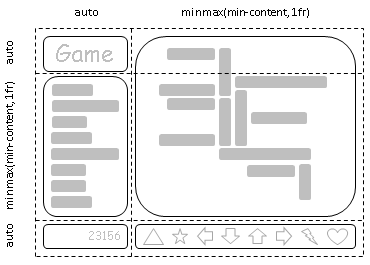

CSS Grid Layout
CSS Grid Layout proporciona una solución sensata a un paradigma de diseño estándar que ha estado desafiando a los diseñadores web desde el alejamiento del diseño basado en tablas y la adopción de CSS para el diseño
El diseño de cuadrícula se puede utilizar para refluir elementos de forma inteligente dentro de una página web. La figura 1 representa un juego con cinco áreas principales en el diseño: el título del juego, el área de estadísticas, el tablero de juego, el área de puntuación y el área de control. La intención del autor es dividir el espacio para el juego de tal manera que: El área de estadísticas siempre aparece inmediatamente debajo del título del juego. El tablero de juego aparece a la derecha de las estadísticas y el título. La parte superior del título del juego y el tablero de juego siempre deben alinearse. La parte inferior del tablero de juego y el área de estadísticas se alinean cuando el juego ha alcanzado su altura mínima, pero de lo contrario el tablero de juego se estirará para aprovechar todos los bienes raíces de la pantalla disponibles para él. El área de puntuación debe alinearse con la columna creada por el área de juego y estadísticas, mientras que los controles están centrados debajo del tablero.


Referencia bibliográfica
Usando hojas de estilo, los webmasters pueden, por ejemplo, generar un estilo patrón para todo el resto de los documentos de una web, con el consiguiente ahorro de tiempo en diseño y mantenimiento. Orós Cabello, J. C. (2014). Diseño de páginas Web con XHTML, JavaScript y CSS.. RA-MA Editorial. https://elibro-net.bibliotecavirtual.unad.edu.co/es/ereader/unad/106414?page=298
Terán Anciano, J. (2016). Manual de Introducción al lenguaje HTML. Formación para el Empleo.. Editorial CEP, S.L. https://elibro-net.bibliotecavirtual.unad.edu.co/es/ereader/unad/50964?page=134
Hampton-Smith, S. (2016). Diseño de cuadrícula CSS. En: Pro CSS3 Layout Techniques. Apress, Berkeley, CA. https://doi.org/10.1007/978-1-4302-6503-0_6
Attardi, J. (2020). CSS Grid. In: Modern CSS. Apress, Berkeley, CA. https://doi.org/10.1007/978-1-4842-6294-8_12
Atkins Jr, T., Etemad, E. J., & Atanassov, R. (2013). CSS Grid Layout.